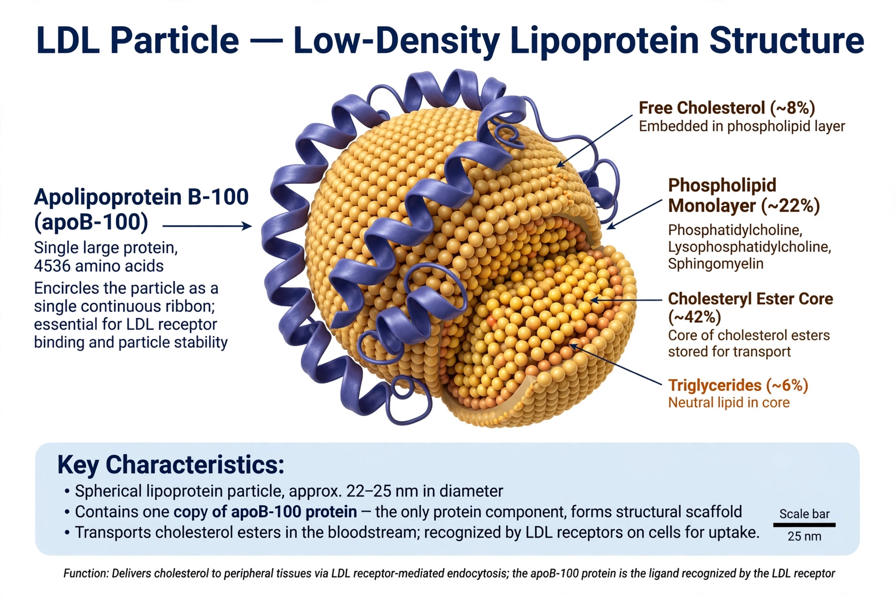

| Low-density lipoprotein (LDL) | |
 An LDL particle with apoB-100 | |
| Diameter | approx. 18–25 nm |
|---|---|
| Density | 1.019–1.063 g/mL |
| Key protein | Apolipoprotein B-100 (one per particle) |
| Main cargo | Cholesteryl esters |
Low-density lipoprotein (LDL) is one of the five major groups of lipoprotein that transport all fat molecules around the body in extracellular water. LDL delivers cholesterol from the liver to peripheral tissues. Because high levels of LDL particles are strongly associated with the development of atherosclerosis, LDL cholesterol is often informally called "bad cholesterol" — in contrast to HDL, the "good cholesterol".
LDL particles are the end product of VLDL metabolism. The liver secretes triglyceride-rich VLDL; lipoprotein lipase strips triglycerides in the circulation, producing IDL, which is further remodelled into cholesterol-rich LDL. Each LDL particle carries exactly one copy of apolipoprotein B-100, the ligand recognised by the LDL receptor. Roughly 70% of LDL is cleared by LDL receptors in the liver; the rest is taken up by peripheral cells. The protein PCSK9 regulates LDL-receptor degradation and hence plasma LDL levels.
When LDL particles are abundant, they penetrate the arterial endothelium and become retained in the vessel wall, where they may be oxidised. Oxidised LDL triggers inflammation, is ingested by macrophages to form foam cells, and initiates the fatty streaks that mature into atherosclerotic plaques. Rupture of a plaque can cause myocardial infarction or stroke.
LDL cholesterol is reported in standard lipid profiles, traditionally estimated with the Friedewald equation. Guidelines commonly regard LDL cholesterol below 100 mg/dL (2.6 mmol/L) as optimal for the general population, with lower targets (below 70 mg/dL) for people at high cardiovascular risk. Direct measures of particle number (LDL-P) or apolipoprotein B are also used.
LDL levels are reduced by statins (which up-regulate hepatic LDL receptors), ezetimibe, bile-acid sequestrants, PCSK9 monoclonal antibodies such as evolocumab, and the siRNA inclisiran. Large outcome trials show that each 1 mmol/L reduction in LDL cholesterol lowers major vascular event risk by roughly a fifth.